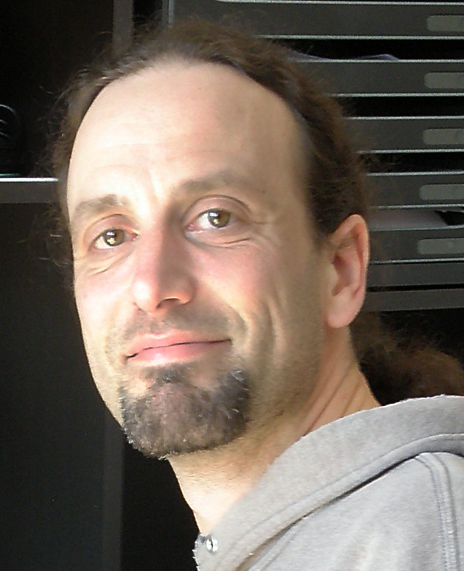

Table of Contents
Anthony Scemama
Ingénieur de Recherche CNRS
Laboratoire de Chimie et Physique Quantiques
IRSAMC, Université Paul Sabatier Toulouse III
118, route de Narbonne
31062 Toulouse Cedex 4
scemama AT irsamc.ups-tlse.fr
ORCID : 0000-0003-4955-7136

| GitHub | GitLab | ResearchGate |
Projects
- TREX Center of Excellence
- ERC PTEROSOR
Software
- Quantum Package : A programming environment for wave function methods.
- QMC=Chem : Quantum Monte Carlo for Chemistry
- QCaml : Quantum chemistry with OCaml
- IRPF90 : Fortran pre-processor helping the development of large scientific codes
- EZFIO : Easy Fortran I/O library generator
- F77_ZMQ : Fortran77 binding for the ZeroMQ communication library.
Oral presentations
- Software development strategy in the TREX Center of Excellence
18/06/2020 CECAM Workshop : The importance of being H.P.C. Earnest, online Watch video - A quantum chemistry calculation distributed among computing facilities with Quantum Package
10/10/2019 Journées des Calculs et de données, Toulouse. Watch video - Some applications of dressing to configuration interaction matrices
03/09/2019 Computation and understanding in molecular science, Toulouse. - Quantum Package 2.0: An Open-Source Determinant-Driven Suite of Programs
12/06/2019 Rencontres Prospectives RFCT 2019 : "Modélisations multi-échelle", Nantes - Extreme accuracy for benchmark systems
25/04/2019 CECAM Workshop Microscopic simulations: forecasting the next two decades, Toulouse - Development in wave function methods made easy with IRPF90 and the Quantum Package
07/02/2019 Virtual Winter School on Computational Chemistry Watch video - Chimie quantique vs machines parallèles
11/10/2018 RCTF, Toulouse - QMC=Chem : Vectorisation efficace sur processeurs scalaires
21/09/2017 CALMIP, Toulouse - QMC with large trial wave functions
19/07/2017 TSRC, Telluride, USA - IRPF90: A Fortran code generator for HPC
13/07/2017 ALCF, Argonne, USA - Accelerated MR-PT2 with a Hybrid Stochastic/Deterministic Algorithm
22/05/2017 CECAM Theoretical Chemistry for Extended Systems, Toulouse - Development in wave function methods made easy with IRPF90 and the Quantum Package
23/03/2016 SRSMC, Nancy - QMC with very large multideterminant expansions
18/12/2015 Pacifichem QMC symposium, Honolulu - Chimie quantique et parallélisme massif
6/11/2015 Réunion TouCAM, Toulouse - Retour sur le cloud Challenge France Grilles
5/11/2015 Journées SUCCES, Paris Watch video - ZeroMQ for massively parallel codes
8/10/2015 Centre for Theoretical and Computational Chemistry, Oslo - IRPF90 : a Fortran code generator for HPC
7/10/2015 Centre for Theoretical and Computational Chemistry, Oslo - A convenient solution to the multiple parentage problem: test of a MRCC method and prospects
8/7/2015 Reunion du GDR Correl, Marseille - Quantum chemistry in the Cloud
2/7/2015 JDev 2015, Bordeaux Watch video - IRPF90 : a Fortran code generator for HPC
2/7/2015 JDev 2015, Bordeaux Watch video - Chimie quantique et parallélisme massif
13/3/2015 discussion meeting CECAM-Fr-IdF "Développement de codes de chimie théorique dans un environnement HPC", Orsay - IRPF90 : a Fortran code generator for HPC
3/2/2015 HPC Knowledge Portal meeting, Barcelona Watch video - IRPF90 : a Fortran code generator for HPC
25/10/2014 Conférence Python PyConFr, Lyon Watch video - Un algorithme permettant de traiter plus d’un million d’atomes en chimie quantique
30/9/2014 Maison de la simulation de l'Université de Reims Champagne-Ardenne - Millions of atoms in DFTB
23/1/2014 CECAM Workshop on two-dimensional inorganic materials, EPFL, Lausanne (Switzerland) - Un million d'atomes en chimie quantique
20/9/2013 Journée Mésochallenges Equip@Meso, IHP, Paris - A fast Sparse SCF implementation: Application to DFTB
25/6/2013 CECAM deMon Workshop, LCC, Toulouse - Software optimization for petaflops/s scale Quantum Monte Carlo simulations
4/12/2012 Maison de la simulation, Saclay - Implémentation de simulations QMC massivement parallèles pourla chimie: Du laboratoire aux calculateurs pétaflopiques en passant par les mésocentres
18/10/2012 Journée scientifique Equip@Meso, Strasbourg, Watch video - QMC=Chem: a quantum Monte Carlo program for large-scale simulations in chemistry at the petascale level and beyond
18/07/2012 10th International Meeting on High-Performance Computing for Computational Science (VECPAR 2012), Kobe (Japan) - Quantum Monte Carlo simulations in chemistry at the petascale level and beyond
28/06/2012 Forum Teratec, Ecole Polytechnique, Palaisau - Quantum Monte Carlo simulations for Alzheimer’s disease on the Curie machine : Efficient strategies for extreme parallelism onpetascale platforms and beyond
19/06/2012 International Supercomputing Conference, Intel Theater, Hamburg (Germany) - Interprétation des liaisons chimiques à partir de fonctions d'ondes de grande précision
15/06/2012 Laboratoire de Chimie de Coordination, Toulouse - Gestion de clusters de calcul avec Rocks
26/4/2012 Réunion Capitoul, Toulouse - Quantum chemistry towards exascale with QMC=Chem
17/11/2011 1000 x 0 = 0. Single-node optimisation does matter, Supercomputing conference 2011, Seattle (USA) - QMC=Chem, a massively parallel Quantum Monte Carlo program
27/04/2011 CEA, Bruyères-le-Chatel - Localisation de paires d'électrons avec la fonction EPLF
16/02/2011 LCC, Toulouse - Localizing electron pairs with the Electron Pair Localization Function
26/06/2010 20 Years ELF, Paris - Large scale QMC calculations on the EGEE grid
14/05/2010 INGRID 2010, Poznan (Poland) - Valorisation et diffusion des logiciels de chimie quantique
16/12/2009 IRSAMC, Toulouse - Présentation de l'outil IRPF90
13/11/2008 IRSAMC, Toulouse - Programmation facile et robuste en Fortran: Présentation de l'outil IRPF90
21/05/2008 LCT, Paris - Version 1.0 de la bibliothèque Q5Cost
20/11/2008 IRSAMC, Toulouse - Version 1.0 of the Q5Cost library
30/06/2008 ICCSA, Perugia (Italy) - Description probabiliste de la liaison chimique
12/07/2006 RCTF, Nancy - Amélioration de l'échantillonnage en QMC
09/02/2006 INRIA, Rocquencourt - MCSCF en presence d'un facteur de corrélation de Jastrow
15/04/2005 IRSAMC, Toulouse
Publications
2020
- Mountaineering Strategy to Excited States: Highly Accurate Energies and Benchmarks for Exotic Molecules and Radicals
Pierre-Francois Loos, Anthony Scemama, Martial Boggio-Pasqua, Denis Jacquemin
- The Quest For Highly Accurate Excitation Energies: A Computational Perspective
Pierre-Francois Loos, Pierre-François Loos, Anthony Scemama, Denis Jacquemin
- Variational principles in quantum Monte Carlo: the troubled story of variance minimization
Alice Cuzzocrea, Anthony Scemama, Wim Briels, Saverio Moroni, Claudia Filippi
- A basis-set error correction based on density-functional theory for strongly correlated molecular systems
Emmanuel Giner, Anthony Scemama, Pierre-François Loos, Julien Toulouse
- Pros and Cons of the Bethe-Salpeter Formalism for Ground-State Energies
Pierre-François Loos, Anthony Scemama, Ivan Duchemin, Denis Jacquemin, Xavier Blase
- The performance of CIPSI on the ground state electronic energy of benzene
Pierre-Francois Loos, Yann Damour, Anthony Scemama
- Taming the fixed-node error in diffusion Monte Carlo via range separation
Anthony Scemama, Emmanuel Giner, Anouar Benali, Pierre-Francois Loos
- A Density-Based Basis-Set Incompleteness Correction for GW Methods
Pierre-François Loos, Barthélémy Pradines, Anthony Scemama, Emmanuel Giner, Julien Toulouse
- A Mountaineering Strategy to Excited States: Highly-Accurate Energies and Benchmarks for Medium Size Molecules
Pierre-François Loos, Filippo Lipparini, Martial Boggio-Pasqua, Anthony Scemama, Denis Jacquemin
- Towards a Systematic Improvement of the Fixed-Node Approximation in Diffusion Monte Carlo for Solids
Anouar Benali, Kevin Gasperich, Kenneth D. Jordan, Thomas Applencourt, Ye Luo, M. Chandler Bennett, Jaron T. Krogel, Luke Shulenburger, Paul R. C. Kent, Pierre-Francois Loos, Anthony Scemama, Michel Caffarel
2019
- Self-Consistent Electron-Nucleus Cusp Correction for Molecular Orbitals
Pierre-Francois Loos, Anthony Scemama, Michel Caffarel
- Influence of Pseudopotentials on Excitation Energies From Selected Configuration Interaction and Diffusion Monte Carlo
Anthony Scemama, Michel Caffarel, Anouar Benali, Denis Jacquemin, Pierre-Francois Loos
- A Density-Based Basis-Set Correction for Wave Function Theory
Pierre-François Loos, Barthélémy Pradines, Anthony Scemama, Julien Toulouse, Emmanuel Giner
- Reference Energies for Double Excitations
Pierre-François Loos, Martial Boggio-Pasqua, Anthony Scemama, Michel Caffarel, Denis Jacquemin
- Excited States with Selected Configuration Interaction-Quantum Monte Carlo: Chemically Accurate Excitation Energies and Geometries
Monika Dash, Jonas Feldt, Saverio Moroni, Anthony Scemama, Claudia Filippi
- Quantum Package 2.0: An Open-Source Determinant-Driven Suite of Programs
Yann Garniron, Thomas Applencourt, Kevin Gasperich, Anouar Benali, Anthony Ferté, Julien Paquier, Barthélémy Pradines, Roland Assaraf, Peter Reinhardt, Julien Toulouse, Pierrette Barbaresco, Nicolas Renon, Grégoire David, Jean-Paul Malrieu, Mickaël Veril, Michel Caffarel, Pierre-Francois Loos, Emmanuel Giner, Anthony Scemama
- Chemically Accurate Excitation Energies With Small Basis Sets
Emmanuel Giner, Anthony Scemama, Julien Toulouse, Pierre-Francois Loos
2018
- IRPF90
Anthony Scemama
- Spin adaptation with determinant-based selected configuration interaction
Thomas Applencourt, Kevin Gasperich, Anthony Scemama
- Perturbatively Selected Configuration-Interaction Wave Functions for Efficient Geometry Optimization in Quantum Monte Carlo
Monika Dash, Saverio Moroni, Anthony Scemama, Claudia Filippi
- A Mountaineering Strategy to Excited States: Highly Accurate Reference Energies and Benchmarks
Pierre-Francois Loos, Anthony Scemama, Aymeric Blondel, Yann Garniron, Michel Caffarel, Denis Jacquemin
- Selected configuration interaction dressed by perturbation
Yann Garniron, Anthony Scemama, Emmanuel Giner, Michel Caffarel, Pierre-François Loos
- Excitation energies from diffusion Monte Carlo using selected configuration interaction nodes
Anthony Scemama, Anouar Benali, Denis Jacquemin, Michel Caffarel, Pierre-François Loos
- Deterministic construction of nodal surfaces within quantum Monte Carlo: the case of FeS
Anthony Scemama, Yann Garniron, Michel Caffarel, Pierre-François Loos
2017
- Pre-exascale Architectures: OpenPOWER Performance and Usability Assessment for French Scientific Community
Gabriel Hautreux, Alfredo Buttari, Arnaud Beck, Victor Cameo, Dimitri Lecas, Dominique Aubert, Emeric Brun, Eric Boyer, Fausto Malvagi, Gabriel Staffelbach, Isabelle D’ast, Joeffrey Legaux, Ghislain Lartigue, Gilles Grasseau, Guillaume Latu, Juan Escobar, Julien Bigot, Julien Derouillat, Matthieu Haefele, Nicolas Renon, Philippe Parnaudeau, Philippe Wautelet, Pierre-François Lavallée, Pierre Kestener, Rémi Lacroix, Stephane Requena, Anthony Scemama, Vincent Moureau, Matthieu Etancelin, Yann Meurdesoif
- Orthogonal Valence Bond Hamiltonians incorporating dynamical correlation effects
Emmanuel Giner, Celestino Angeli, Anthony Scemama, Jean-Paul Malrieu
- Alternative definition of excitation amplitudes in multi-reference state-specific coupled cluster
Yann Garniron, Emmanuel Giner, Jean-Paul Malrieu, Anthony Scemama
- A Jeziorski-Monkhorst fully uncontracted multi-reference perturbative treatment. I. Principles, second-order versions, and tests on ground state potential energy curves
Emmanuel Giner, Celestino Angeli, Yann Garniron, Anthony Scemama, Jean-Paul Malrieu
- Hybrid stochastic-deterministic calculation of the second-order perturbative contribution of multireference perturbation theory
Yann Garniron, Anthony Scemama, Pierre-François Loos, Michel Caffarel
- Corrélation électronique et parallélisme à grande échelle
Anthony Scemama
2016
- Using CIPSI nodes in diffusion Monte Carlo
Michel Caffarel, Thomas Applencourt, Emmanuel Giner, Anthony Scemama
- Quantum Monte Carlo with very large multideterminant wavefunctions
Anthony Scemama, Thomas Applencourt, Emmanuel Giner, Michel Caffarel
- Communication: Toward an improved control of the fixed-node error in quantum Monte Carlo: The case of the water molecule
Michel Caffarel, Thomas Applencourt, Emmanuel Giner, Anthony Scemama
- A simple approach to the state-specific MR-CC using the intermediate Hamiltonian formalism
Emmanuel Giner, Grégoire David, Anthony Scemama, Jean-Paul Malrieu
2015
- Fixed-node diffusion Monte Carlo potential energy curve of the fluorine molecule F2 using selected configuration interaction trial wavefunctions
Emmanuel Giner, Anthony Scemama, Michel Caffarel
2014
- Spin Density Distribution in Open-Shell Transition Metal Systems: A Comparative Post-Hartree–Fock, Density Functional Theory, and Quantum Monte Carlo Study of the CuCl2 Molecule
Michel Caffarel, Emmanuel Giner, Anthony Scemama, Alejandro Ramírez-Solís
- A Sparse Self-Consistent Field Algorithm and Its Parallel Implementation: Application to Density-Functional-Based Tight Binding
Anthony Scemama, Nicolas Renon, Mathias Rapacioli
- Accurate nonrelativistic ground-state energies of 3d transition metal atoms
Anthony Scemama, Thomas Applencourt, Emmanuel Giner, Michel Caffarel
- Code interoperability and standard data formats in quantum chemistry and quantum dynamics: The Q5/D5Cost data model
Elda Rossi, Stefano Evangelisti, Antonio Lagana, Antonio Monari, Sergio Rampino, Marco Verdicchio, Kim K. Baldridge, Gian Luigi Bendazzoli, Stefano Borini, Renzo Cimiraglia, Celestino Angeli, Peter Kallay, Hans P. Lüthi, Kenneth Ruud, José Sánchez-Marín, Anthony Scemama, Peter Szalay, Attila Tajti
2013
- Simulations in Chemistry: The Quantum Monte Carlo Methods
Michel Caffarel, Anthony Scemama
- Using perturbatively selected configuration interaction in quantum Monte Carlo calculations
Emmanuel Giner, Anthony Scemama, Michel Caffarel
- Further refinements of next-generation force fields – Nonempirical localization of off-centered points in molecules
Robin Chaudret, Nohad Gresh, Andrés Cisneros, Anthony Scemama, Jean-Philip Piquemal
- Un million d'atomes en chimie quantique
Anthony Scemama, Mathias Rapacioli, Nicolas Renon
- An efficient implementation of Slater-Condon rules
Anthony Scemama, Emmanuel Giner
- QMC=Chem: A Quantum Monte Carlo Program for Large-Scale Simulations in Chemistry at the Petascale Level and beyond
Anthony Scemama, Michel Caffarel, Emmanuel Oseret, William Jalby
- Simulations en Chimie : Les bénéfices des méthodes Monte-Carlo Quantique
Michel Caffarel, Anthony Scemama
- Simulations en chimie : l'approche Monte-Carlo quantique
Michel Caffarel, Anthony Scemama
- Quantum Monte Carlo for large chemical systems: Implementing efficient strategies for petascale platforms and beyond
Anthony Scemama, Michel Caffarel, Emmanuel Oseret, William Jalby
2012
- Large-Scale Quantum Monte Carlo Electronic Structure Calculations on the EGEE Grid
Antonio Monari, Anthony Scemama, Michel Caffarel
- Les supercalculateurs décryptent la chimie du vivant
Michel Caffarel, Anthony Scemama
2011
- Modeling Charge Resonance in Cationic Molecular Clusters: Combining DFT-Tight Binding with Configuration Interaction
Mathias Rapacioli, Fernand Spiegelman, Anthony Scemama, André Mirtschink
- Electron Pair Localization Function (EPLF) for Density Functional Theory and ab Initio Wave Function-Based Methods: A New Tool for Chemical Interpretation
Anthony Scemama, Michel Caffarel, Robin Chaudret, Jean-Philip Piquemal
- Spin-driven activation of dioxygen in various metalloenzymes and their inspired models.
Aurelien de la Lande, Dennis R Salahub, Jacques Maddaluno, Anthony Scemama, Julien Pilme, Olivier Parisel, Helene Gerard, Michel Caffarel, Jean-Philip Piquemal
- On the stability of Be3: A benchmark complete active space self-consistent field + averaged quadratic coupled cluster study
J. Amaro-Estrada, Anthony Scemama, Michel Caffarel, Alejandro Ramirez-Solis
2010
- The lithium-thiophene interaction: a critical study using highly correlated electronic structure approaches of quantum chemistry
Michel Caffarel, Anthony Scemama, Alejandro Ramírez-Solís
- Structural and optical properties of a neutral Nickel bisdithiolene complex: density functional versus ab initio methods
Fabienne Alary, Jean-Louis Heully, Anthony Scemama, Bénédicte Garreau-de Bonneval, Kathleen Chane-Ching, Michel Caffarel
2009
- IRPF90: a programming environment for high performance computing
Anthony Scemama
- Bond breaking and bond making in tetraoxygen: analysis of the O2(X3Sigma(g)-) + O2(X3Sigma(g)-) <==> O4 reaction using the electron pair localization function.
Michel Caffarel, Anthony Scemama, Alejandro Ramírez-Solís
- A theoretical study of linear beryllium chains: full configuration interaction.
Valentina Vetere, Antonio Monari, Anthony Scemama, Gian Luigi Bendazzoli, Stefano Evangelisti
2008
- Energies, stability and structure properties of radicals derived from organic sulfides containing an acetyl group after the *OH attack: ab initio and DFT calculations vs experiment.
Jacqueline Bergès, Nicolas Varmenot, Anthony Scemama, Zohreh Abedinzadeh, Krzysztof Bobrowski
- Common Format for Quantum Chemistry Interoperability: Q5Cost Format and Library
Anthony Scemama, Antonio Monari, Celestino Angeli, Stefano Borini, Stefano Evangelisti, Elda Rossi
- Q5Cost format and library: a tutorial about the common format for quantum chemistry interoperability
Antonio Monari, Anthony Scemama, Stefano Evangelisti, Elda Rossi, Stefano Cozzini
2007
- Improved Monte Carlo estimators for the one-body density.
Roland Assaraf, Michel Caffarel, Anthony Scemama
- Multireference quantum Monte Carlo study of the O4 molecule.
Michel Caffarel, Ramón Hernández-Lamoneda, Anthony Scemama, Alejandro Ramírez-Solís
- Maximum probability domains from Quantum Monte Carlo Calculations
Anthony Scemama, Michel Caffarel, Andreas Savin
2006
- Efficient Monte Carlo Calculations of the One-Body Density
Roland Assaraf, Michel Caffarel, Anthony Scemama
- Simple and efficient approach to the optimization of correlated wave functions
Anthony Scemama, Claudia Filippi
- An efficient sampling algorithm for variational Monte Carlo.
Anthony Scemama, Tony Lelièvre, Gabriel Stoltz, Eric Cancès, Michel Caffarel
- A few aspects of QMC for molecules
Michel Caffarel, Roland Assaraf, Anatole Khelif, Anthony Scemama, Alejandro Ramirez-Solis
2005
2004
- Réactivité en milieu atmosphérique et analyse Monte Carlo quantique de la localisation électronique
Anthony Scemama
- Spectral, Kinetic, and Theoretical Studies of Sulfur-Centered Reactive Intermediates Derived from Thioethers Containing an Acetyl Group
Nicolas Varmenot, Jacqueline Bergès, Zohreh Abedinzadeh, Anthony Scemama, Grazyna Strzelczak, Krzysztof Bobrowski
- Electron pair localization function: A practical tool to visualize electron localization in molecules from quantum Monte Carlo data
Anthony Scemama, Patrick Chaquin, Michel Caffarel
- Theoretical study of the electrocyclization product of butadiyne: structure, stability and possible formations
Patrick Chaquin, Anthony Scemama
2002
- Theoretical Study of the Structure and Properties of Polyynes and Monocyano- and Dicyanopolyynes: Predictions for Long Chain Compounds
Anthony Scemama, Patrick Chaquin, Marie-Claire Gazeau, Yves Bénilan
- Semi-empirical calculation of electronic absorption wavelengths of polyynes, monocyano- and dicyanopolyynes. Predictions for long chain compounds and carbon allotrope carbyne
Anthony Scemama, Patrick Chaquin, Marie-Claire Gazeau, Yves Bénilan
2001
- IR and UV spectroscopic data for polyynes: predictions for long carbon chain compounds in Titan's atmosphere
Véronique Vuitton, Anthony Scemama, Marie-Claire Gazeau, Patrick Chaquin, Yves Bénilan